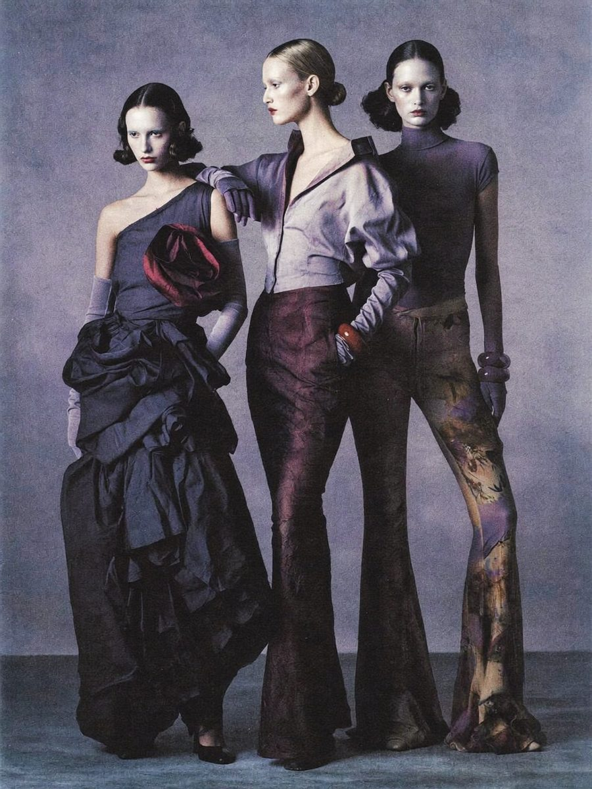

Tendencias
Colecciones y pasarelas: los tonos que marcan el Otoño-Invierno
El uso de gamas moradas, lavanda, berenjena y borgoña suele marcar tendencia en las temporadas de otoño-invierno en las firmas de alta costura — los mismos tonos que ya vemos en nuestras piezas de temporada.